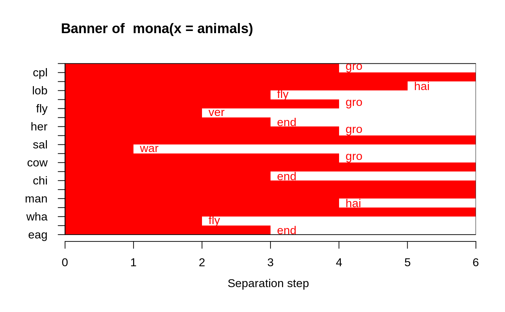

mona.RdReturns a list representing a divisive hierarchical clustering of a dataset with binary variables only.
mona(x, trace.lev = 0)
| x | data matrix or data frame in which each row corresponds to an
observation, and each column corresponds to a variable. All
variables must be binary. A limited number of missing values ( |
|---|---|
| trace.lev | logical or integer indicating if (and how much) the algorithm should produce progress output. |
an object of class "mona" representing the clustering.
See mona.object for details.
mona is fully described in chapter 7 of Kaufman and Rousseeuw (1990).
It is “monothetic” in the sense that each division is based on a
single (well-chosen) variable, whereas most other hierarchical methods
(including agnes and diana) are “polythetic”, i.e. they use
all variables together.
The mona-algorithm constructs a hierarchy of clusterings,
starting with one large cluster. Clusters are divided until all
observations in the same cluster have identical values for all variables.
At each stage, all clusters are divided according to the values of one
variable. A cluster is divided into one cluster with all observations having
value 1 for that variable, and another cluster with all observations having
value 0 for that variable.
The variable used for splitting a cluster is the variable with the maximal total association to the other variables, according to the observations in the cluster to be splitted. The association between variables f and g is given by a(f,g)*d(f,g) - b(f,g)*c(f,g), where a(f,g), b(f,g), c(f,g), and d(f,g) are the numbers in the contingency table of f and g. [That is, a(f,g) (resp. d(f,g)) is the number of observations for which f and g both have value 0 (resp. value 1); b(f,g) (resp. c(f,g)) is the number of observations for which f has value 0 (resp. 1) and g has value 1 (resp. 0).] The total association of a variable f is the sum of its associations to all variables.
NAs)The mona-algorithm requires “pure” 0-1 values. However,
mona(x) allows x to contain (not too many)
NAs. In a preliminary step, these are “imputed”,
i.e., all missing values are filled in. To do this, the same measure
of association between variables is used as in the algorithm. When variable
f has missing values, the variable g with the largest absolute association
to f is looked up. When the association between f and g is positive,
any missing value of f is replaced by the value of g for the same
observation. If the association between f and g is negative, then any missing
value of f is replaced by the value of 1-g for the same
observation.
In cluster versions before 2.0.6, the algorithm entered an
infinite loop in the boundary case of one variable, i.e.,
ncol(x) == 1, which currently signals an error (because the
algorithm now in C, haes not correctly taken account of this special case).
agnes for background and references;
mona.object, plot.mona.
#> mona(x, ..) fit; x of dimension 20x6 #> Because of NA's, revised data: #> war fly ver end gro hai #> ant 0 0 0 0 1 0 #> bee 0 1 0 0 1 1 #> cat 1 0 1 0 0 1 #> cpl 0 0 0 0 0 1 #> chi 1 0 1 1 1 1 #> cow 1 0 1 0 1 1 #> duc 1 1 1 0 1 0 #> eag 1 1 1 1 0 0 #> ele 1 0 1 1 1 0 #> fly 0 1 0 0 0 0 #> fro 0 0 1 1 0 0 #> her 0 0 1 0 1 0 #> lio 1 0 1 1 1 1 #> liz 0 0 1 0 0 0 #> lob 0 0 0 0 0 0 #> man 1 0 1 1 1 1 #> rab 1 0 1 0 1 1 #> sal 0 0 1 0 0 0 #> spi 0 0 0 0 0 1 #> wha 1 0 1 1 1 0 #> Order of objects: #> [1] ant cpl spi lob bee fly fro her liz sal cat cow rab chi lio man ele wha duc #> [20] eag #> Variable used: #> [1] gro NULL hai fly gro ver end gro NULL war gro NULL end NULL NULL #> [16] hai NULL fly end #> Separation step: #> [1] 4 0 5 3 4 2 3 4 0 1 4 0 3 0 0 4 0 2 3 #> #> Available components: #> [1] "data" "hasNA" "order" "variable" "step" "order.lab" #> [7] "call"## One place to see if/how error messages are *translated* (to 'de' / 'pl'): ani.NA <- animals; ani.NA[4,] <- NA aniNA <- within(animals, { end[2:9] <- NA }) aniN2 <- animals; aniN2[cbind(1:6, c(3, 1, 4:6, 2))] <- NA ani.non2 <- within(animals, end[7] <- 3 ) ani.idNA <- within(animals, end[!is.na(end)] <- 1 ) try( mona(ani.NA) ) ## error: .. object with all values missing#> Error in mona(ani.NA) : #> No clustering performed, an object was found with all values missing.#> Error in mona(aniNA) : #> No clustering performed, found variable with more than half values missing.#> Error in mona(aniN2) : #> No clustering performed, all variables have at least one missing value.#> Error in mona(ani.non2) : #> All variables must be binary (e.g., a factor with 2 levels, both present).#> Error in mona(ani.idNA) : #> All variables must be binary (e.g., a factor with 2 levels, both present).